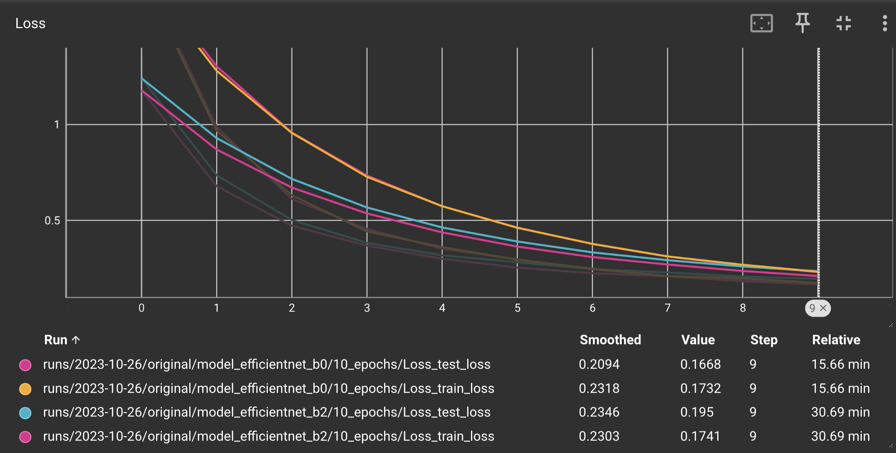
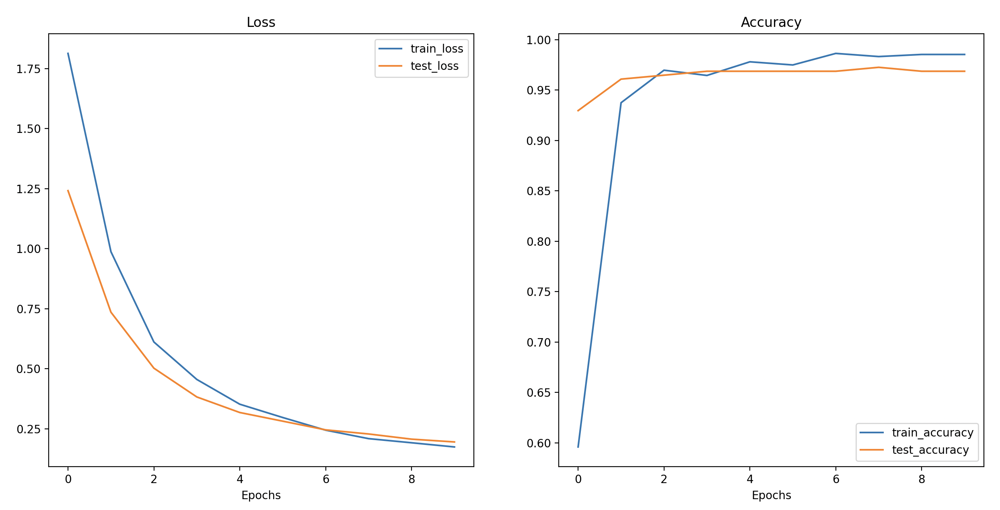
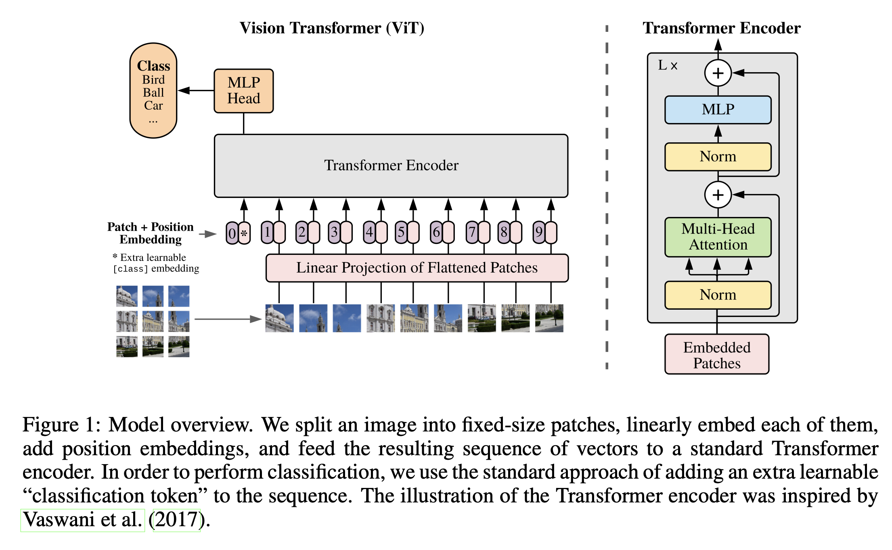
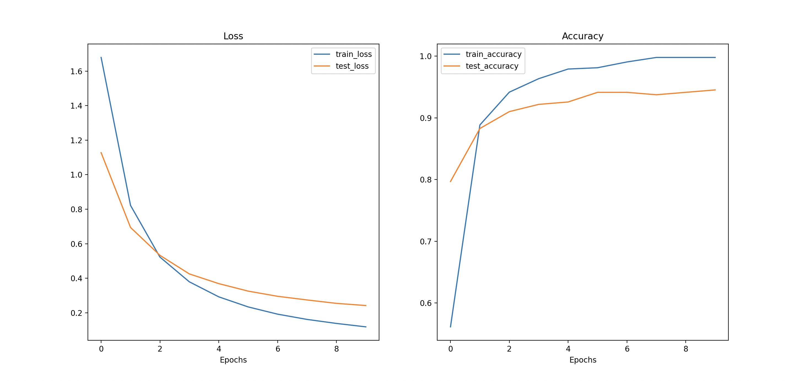
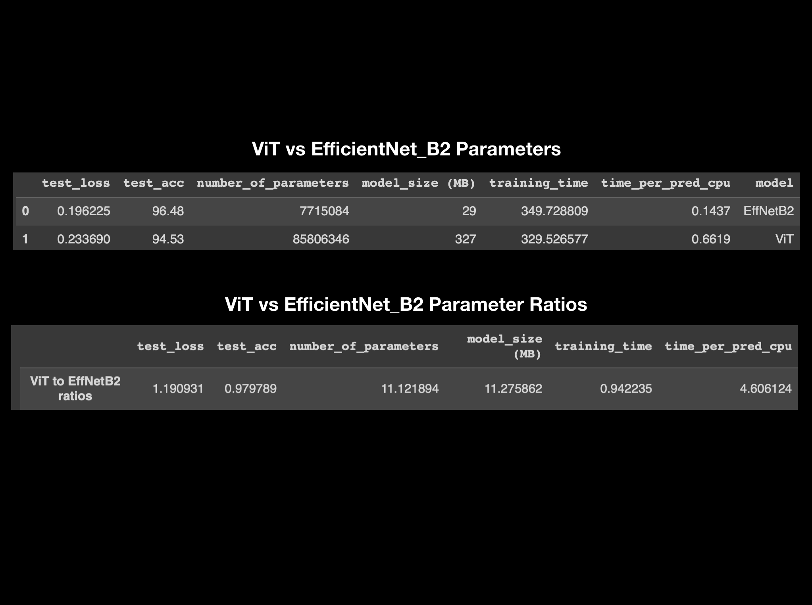

Completed a 24-hour Deep Learning with PyTorch course by David Bourke, along with additional lessons on their website. This course included the following topics: PyTorch Fundamentals, PyTorch Workflow Fundamentals, Neural Network Classification, Computer Vision, Custom Datasets, Going Modular, Transfer Learning, Experiment Tracking, Paper Replicating, Model Deployment.
With the skills I gained from this course, I developed my first PyTorch model. The model's purpose was to differentiate between various SpongeBob Squarepants characters, starting with a dataset containing 10 different characters.
I began by experimenting with different versions of the existing Tiny VGG, which is a lightweight convolutional neural network architecture. During these experiments, I made changes to parameters like the number of CNN layers, hidden layers, training epochs, learning rates, and dataset size.
With these initial methods, I achieved an accuracy of approximately 70%. The likely reason for this is that I had to manually collect my training data. This process involved watching SpongeBob episodes to observe the evolving styles of character drawings across various seasons. I took screenshots from different angles and situations in the episodes. Given the time-consuming nature of this task, I've managed to gather only 120 images per character thus far.

Figure 1: Example image transformation prior to passing through model.

Figure 2: Example prediction testing.

Figure 3: Example confusion matrix.
I needed either a much larger dataset, or needed to use transfer learning. Transfer learning is a suitable approach for this problem because the initial training on a vast dataset using a much more complex architecture equips the model with a general understanding of what different images look like. This understanding remains valuable, even when your dataset is relatively unrelated to the training data they initially used. By adding an additional classifier layer on top of the pre-trained model, you can quickly fine-tune the model to differentiate between specific classes, even with a smaller dataset, as was the case for me. Using transfer learning, my model was able to achieve an accuracy of over 98%.
In the process of creating my first model, I conducted experiments using PyTorch's pre-trained classification models 'EfficientNet_B0' and 'EfficientNet_B2' as well. Through these experiments, I observed that 'EfficientNet_B2' exhibited higher efficiency. This observation is supported by the loss curve, as indicated in the figure below, where the 'EfficientNet_B2' model achieved lower loss within the same training period. Notably, 'EfficientNet_B2' features a larger parameter count and was trained on a more extensive dataset.

Figure 4: Loss graph EfficientNet_B0 vs EfficientNet_B2.

Figure 5: Loss and accuracy curve of the results of EfficientNet_B2 testing.
Next, I delved into the topic of paper replication, which involves translating machine learning research papers into practical code. The paper I analyzed was titled "An Image Is Worth 16X16 Words: Transformers For Image Recognition At Scale". Transformers are a type of deep learning model architecture initially developed for natural language processing. They employ self-attention mechanisms to process and understand sequences of data, such as sentences. In simpler terms, transformers discern which words are more significant than others in order to grasp the meaning of the data.
The paper I mentioned above held significant importance upon its release, as it pioneered the use of Vision Transformers (ViT) to apply a deep learning technique, originally designed for natural language processing, to the domain of image processing. This is primarily achieved by dividing images into patches of a defined size and arranging them in a manner where each patch is treated like a word. The model can then identify relationships between these image patches.

Figure 6: Vision Transformer Model Overview
There existed four main equations within the paper that allowed me to completely replicate the model:
Equation 1: Split data into patches and creating the class, position and patch embedding - This involves breaking the image into patches and representing it in a 1D format.
Equation 2: Multi-Head Attention (MSA) - part of the Transformer Encoder, applies layer normalization, utilizes simplified approach where all queries (q), keys (k), and values (v) are set to the same value for efficient processing.
Equation 3: Multilayer Perceptron (MLP) - part of the Transformer Encoder, applies layer normalization, the remaining process essentially consists of multiple combinations of linear and non-linear layers.
Equation 4: Classifier - converts the resulting logits into probability predictions for each class.
While recreating the ViT architecture was highly educational, its performance was suboptimal compared to the original ViT model from the research paper, which was trained on a vast dataset, whereas mine was trained on just over a thousand pictures. For this reason, I found it beneficial to use PyTorch's pretrained ViT model implementation, which resulted in significantly improved accuracy.
After experimenting with various models and techniques, I conducted experiment tracking to determine the most suitable model for my project. I imported my code into Google Colab to leverage GPU acceleration for efficient training and testing of both EfficientNet_B2 and ViT models, allowing for a detailed comparison.

Figure 7: Loss and accuracy curve of the results of pretrained ViT testing.

Figure 8: Experiment tracking parameters ViT vs EfficientNet_B2.

Figure 9: Inference Speed vs Performance for ViT vs EfficientNet_B2.
Figure 8 provides an overview of the experiment tracking parameters comparing ViT and EfficientNet_B2 models. While test loss and test accuracy show a close correlation, ViT's number of parameters and model size is approximately 11 times that of EfficientNet_B2. Additionally, the time per prediction is nearly five times longer for ViT. Given my intention to deploy the model on a mobile device for real-time predictions, it is essential to maintain low inference times. Consequently, EfficientNet_B2 emerges as the preferred model choice for my application, boasting an accuracy of 96.5% and an inference time of 0.14 seconds. It's worth noting that these predictions were made using Google Colab's CPU, which tends to be slower than other device CPUs, suggesting that inference times on other devices would likely be even faster. It's important to clarify that this choice doesn't imply that EfficientNet_B2 is inherently better than ViT; it simply suits our current use case. Different experiment results may arise under different conditions, such as larger datasets and longer training times, among other factors.
Link to Deployed Model on Hugging Face
Github link